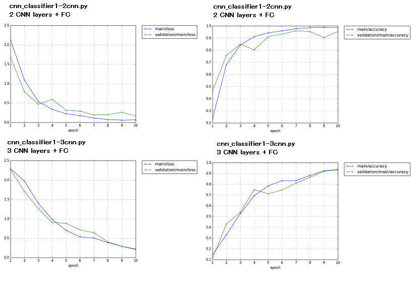

mel spectrogram, autoencoder
Abstract
A practice of making mel spectrogram, CNN autoencode pre-training, and classifier by deep learning Chainer
Usage
1.making mel spectrogram
Download the english number 0-9 speech data, http://pannous.net/files/spoken_numbers_wav.tar
(See Description of Data in https://github.com/AKBoles/Deep-Learning-Speech-Recognition/blob/master/Pannous-Walkthrough.md
)
and move wav files to wav directory. Steffi were removed due to it may
soemthing wrong.
python make_spectrogram.py
Mel scale of FFT size, shift size, bands number, max frequency and min
frequecny are adjustable as class GetSpecgram init
Some input wav file of
slow utterance (xxx40 <=) or fast utterance (xxx260 >=) were rejected
spectrogram.zip is an example of output spectrogram directory.
2.making DataSet
Data set of 2D gray scale image and its label for classifier and autoencoder
python make_dataset.py
3.classifier by deep learning framework Chainer
2 CNN layers + FC model
python cnn_classifier1-2cnn.py
3 CNN layers + FC model
python cnn_classifier1-3cnn.py

2
CNN layers + FC is better performance than 3 CNN layers.
4.CNN-Autoencoder by deep learning framework Chainer
Customized chainer extensions of Updater, Evaluator, and plot_figure are
used.
input->encoder->decoder->output
python cnn_autoencoder1.py

input>encoder(fixed)->encoder->decoder>decoder(fxied)->output
2nd layer of autoencoder training
python cnn_autoencoder2.py

input>encoder(fixed)->encoder(fixed)>encoder->decoder->decoder(fixed)->decoder(fixed)>output
3rd layer of autoencoder training
python cnn_autoencoder3.py

5.classifier with pre-train
load autoencoder trained result, set as initial Weight and bias of CNN, and start training of classifier
python cnn_classifier2-3cnn.py

Pre-train method rises up faster, but, final performance may depends on layers
structure.
License
Regarding to melbank.py, follow the license wrtten in the contents.
References
- wav of Pannous, Description
- chainer dataset
- chainer deep autoencoder
- chainer extension Evaluator
- chainer extension DelGradient
- chainer extension Updater
Disclaimer
THE SOFTWARE IS PROVIDED “AS IS”, WITHOUT WARRANTY OF ANY KIND, EXPRESS OR IMPLIED, INCLUDING BUT NOT LIMITED TO THE WARRANTIES OF MERCHANTABILITY, FITNESS FOR A PARTICULAR PURPOSE AND NONINFRINGEMENT. IN NO EVENT SHALL THE AUTHORS OR COPYRIGHT HOLDERS BE LIABLE FOR ANY CLAIM, DAMAGES OR OTHER LIABILITY, WHETHER IN AN ACTION OF CONTRACT, TORT OR OTHERWISE, ARISING FROM, OUT OF OR IN CONNECTION WITH THE SOFTWARE OR THE USE OR OTHER DEALINGS IN THE SOFTWARE.